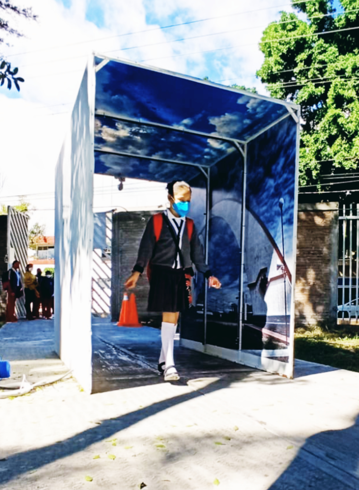
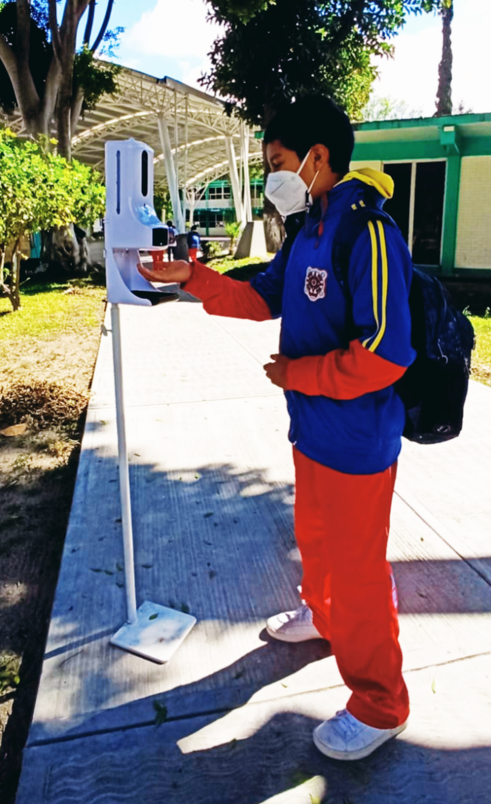
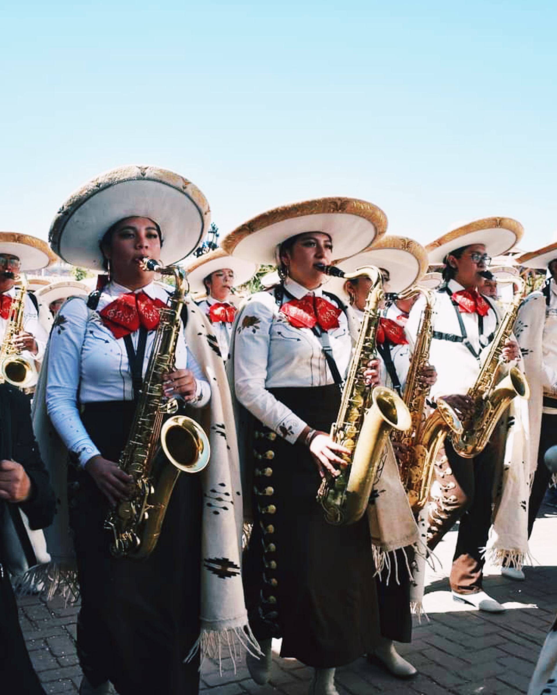
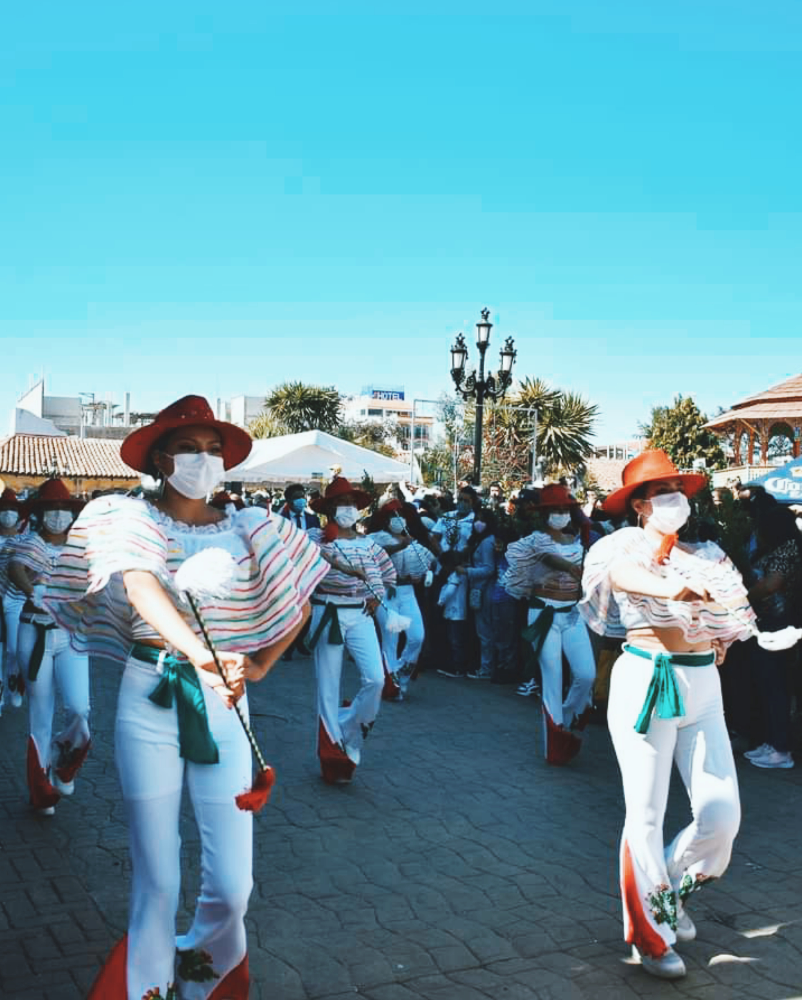
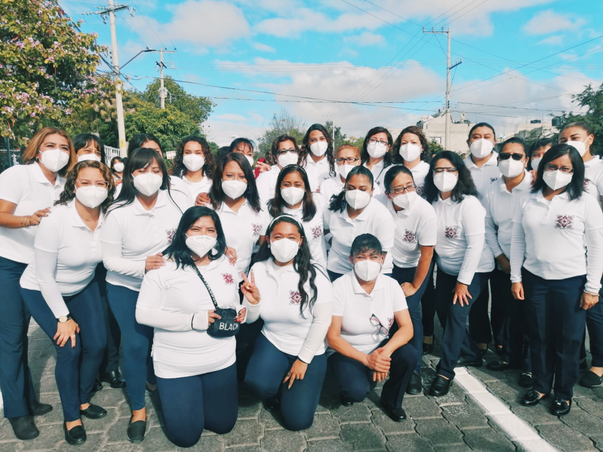
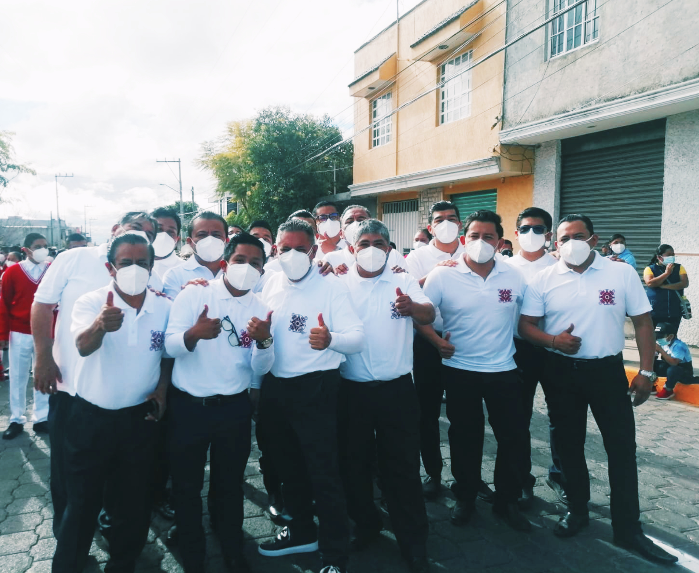

Se convoca a la 2da carrera virtual del estudiante 2021 del proyecto
transversal “Uso activo y creativo del tiempo libre en casa”.
Únete a mí en 2da Carrera virtual del estudiante Tamayo en Nike Run Club 🏃♀️🏃♂️💪
Unirme
Sigue la red social Facebook de la escuela: Escuela Secundaria Ing. Jorge L. Tamayo
en donde tambien podras encontrar informacion, noticias y avisos.
Unirme
Medidas sanitarias en la institucion
Fecha de publicacion: 03/01/2022
Debido a la presente pandemia, la institución ha tomado las medidas sanitarias en las cuales consta del contrato de servicios de sanitación en la compañía H-HERA la cual mes con mes brinda una sanitización excelente en cada salón y espacio en la institución.
Además de la colocación de túneles en cada puerta de acceso de la escuela que al ingresar activan una sanitización hacia el alumno, así como medidores de temperatura con gel antibacterial y lavabos en puntos específicos en toda la institución.

 
Las últimas presentaciones del año de Jaguares Marching Band
Fecha de publicacion: 20/12/2021
Que la alegría y la música no falten nunca, la banda de música de la
institución ha realizado varias presentaciones en nuestro estado como
lo fue el 19 de diciembre en el desfile navideño de Amozoc siendo un
éxito total y el 6 de diciembre en La FERIA 25° DE LA ESFERA CHIGNAHUAPAN,
desfile en que fueron invitadas muchas bandas de música entre ellas la nuestra.
 
Desfile de la revolucion mexicana
Fecha de publicacion: 20/11/2021
El primer desfile en el que participó la escuela fue el del 20 de Noviembre de 1973,
en el que se dio una muestra de lo que ha sido la brillante trayectoria de la Escuela Secundaria
“Ing. Jorge L. Tamayo”. Fue una demostración palpable de que el éxito se logra desde los inicios de una empresa,
cuando se unen esfuerzo y dedicación.
Después de un receso debido a la pandemia la escuela vuelve a ser partícipe de este gran desfile en la ciudad de Tehuacán,
conformado por el contingente representativo de la Escuela lo integran el guión,
la representación de los Hermanos Serdan y de Las Adelitas, un grupo de profesores
de la institución, el contingente de alumnos y la Banda de música.

 